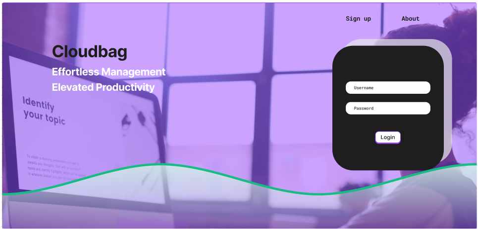

Introduction:
Embark on a transformative digital journey with Cloudbag, an innovative web app developed as our college final year project. In collaboration with my talented teammates, YadhuKrishna and Karthik, we've created a dynamic and feature-rich platform, all hosted and powered by the cloud.

Tech Stack:
Cloudbag leverages the capabilities of the cloud, utilizing Node.js, JavaScript, HTML, CSS, MongoDB, and the Express.js framework. Figma was employed for seamless and intuitive design, ensuring a user-friendly experience with the added benefit of cloud-based scalability.
Cloud Storage for Organized Notes:
Cloudbag guarantees seamless and secure cloud storage, enhancing accessibility and organization across devices for notes in diverse formats—PDFs, images, and documents. Your data is effortlessly available anytime, anywhere, promoting structured and efficient note management.
Notebook:
Immerse yourself in collaborative note-taking with Cloudbag's cloud-based online notebook. Real-time syncing across devices ensures your important points are captured effortlessly during meetings, lectures, or brainstorming sessions.
AI Doubt Assistance:
Experience the power of cloud-driven AI with Cloudbag's doubt assistance system. Get instant clarification and enhance your learning journey with real-time answers to your queries.
CloudSpell:
Hosted in the cloud, Cloudbag's unique CloudSpell feature identifies grammatical mistakes and offers suggestions for correction. This automated process streamlines editing, ensuring polished and error-free content.
Augmented Reality (AR) Learning:
Explore the world of AR through Cloudbag's cloud-hosted 3D model visualization. Delve into intricate details of objects like the heart, lungs, electronic parts, and more, creating an immersive and interactive learning experience.
Secure Cloud Login System:
Prioritizing user security, Cloudbag implements a robust cloud-based login system, ensuring data confidentiality and privacy.
Conclusion:
Cloudbag is more than a note-taking app; it's a cloud-powered platform designed to enhance productivity, foster collaborative learning, and provide innovative tools for self-improvement. Join us on this exciting cloud-driven journey as we redefine the way users interact with information in the digital age. Explore Cloudbag and unlock a new dimension of organized note-taking and interactive learning.